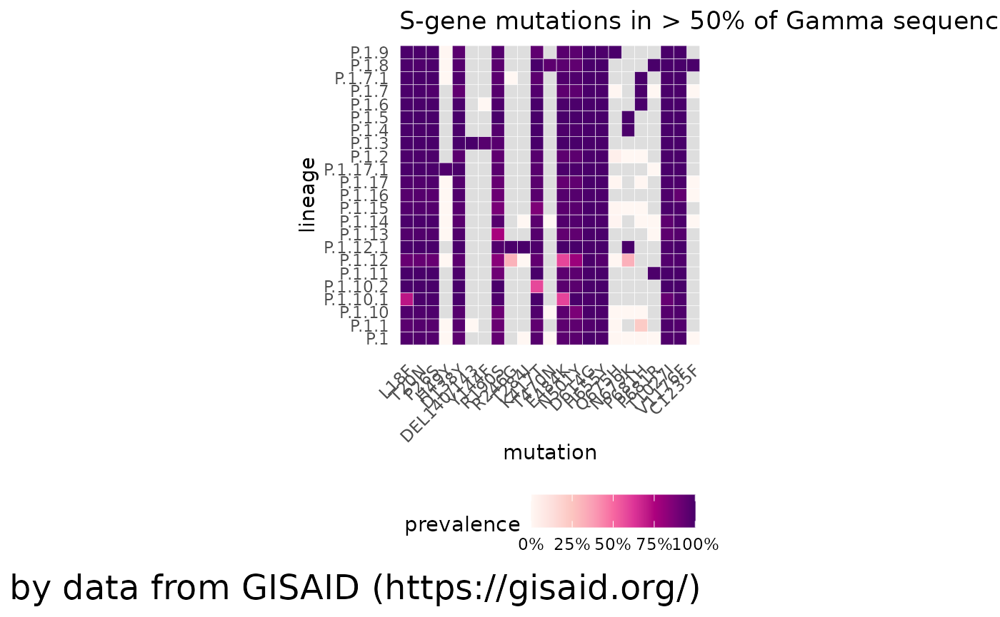
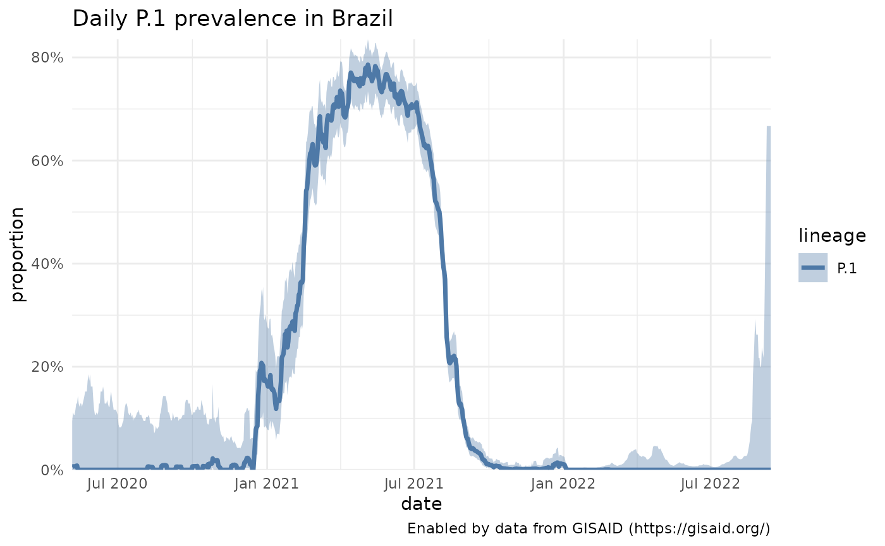
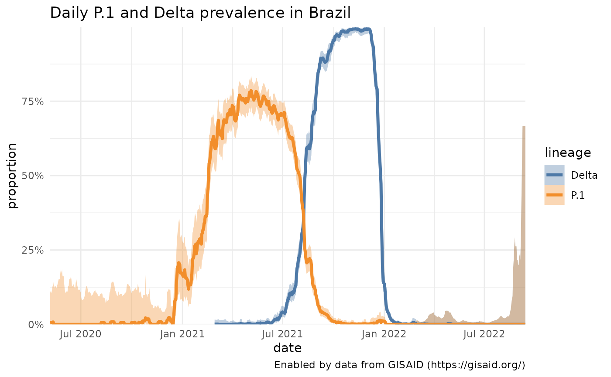
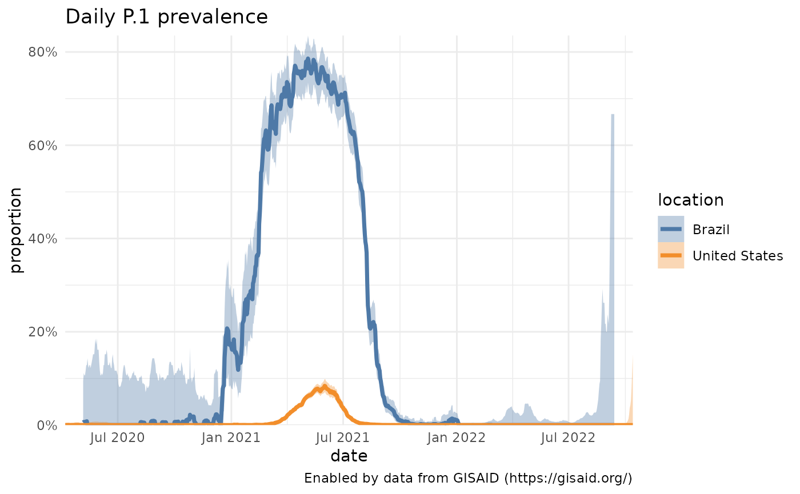
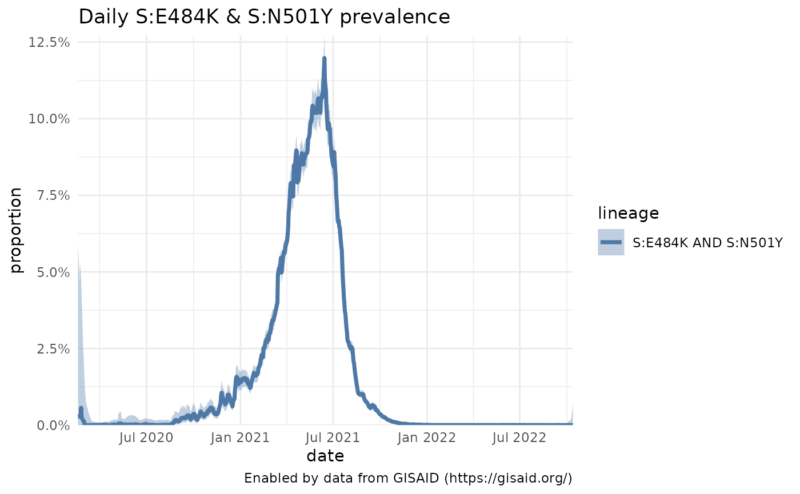
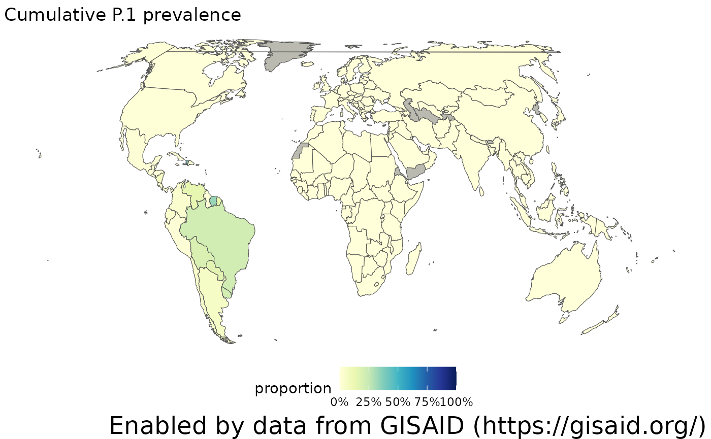
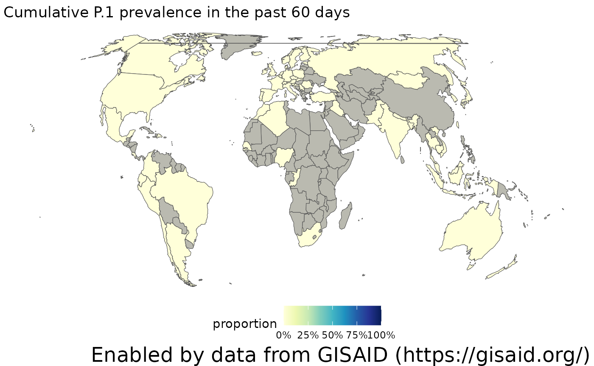

Accessing the data in outbreak.info’s Variant Tracker
outbreak.info’s Variant Tracker allows you to view how combinations of lineages and mutations are changing over time. These reports allow you to answer questions like:
- What mutations are present within that lineage?
- How prevalent is a variant overall?
- How is the prevalence of the variant changing?
- Where is the variant most prevalent?
- What is known about the variant in the research literature?
Here, we’ll demonstrate how to access the data in the P.1 Lineage Report. The P.1 / Gamma lineage was labeled a Variant of Concern by the WHO in January 2021 because it showed evidence of increased transmissibility, virulence, and/or decreased diagnostic, therapeutic, or vaccine efficacy.
Before we start…
Import the packages we’ll use and provide our GISAID credentials to access the data. If you don’t have a GISAID account, you can register for one on their website. It may take a day or two for the account to become active.
# Package imports
library(dplyr)
#> Warning: package 'dplyr' was built under R version 4.0.5
library(purrr)
library(ggplot2)
library(knitr)
library(outbreakinfo)
#> Warning: replacing previous import 'jsonlite::flatten' by 'purrr::flatten' when
#> loading 'outbreakinfo'
#> Warning: replacing previous import 'ggplot2::%+%' by 'crayon::%+%' when loading
#> 'outbreakinfo'
# Authenticate yourself using your GISAID credentials.
authenticateUser()What mutations are characteristic of the variant?
A very basic question: what is P.1? What mutations consistently appear in most sequences within the lineage?
Grabbing the characteristic mutations
p1 = getMutationsByLineage(pangolin_lineage="P.1")
#> Retrieving data...
plotMutationHeatmap(p1, title="Characteristic mutations of P.1 occurring in at least 75% of sequences")
Comparing to other lineages
We can also compare how the mutations of P.1 compare to its sublineages, to look how any mutations may have been aquired or disappeared. We can also lower (or raise) the threshold for which mutations are included
# First: find which sublineages are associated with P.1:
gamma_lineages = lookupSublineages("Gamma", returnQueryString = FALSE)
# Collect the data
gamma_mutations = getMutationsByLineage(pangolin_lineage=gamma_lineages, frequency=0.5, logInfo = FALSE)
# Plot!
plotMutationHeatmap(gamma_mutations, title = "S-gene mutations in > 50% of Gamma sequences")
# You can also change the gene you select by changing
# plotMutationHeatmap(gamma_mutations, title = "ORF1a-gene mutations in Gamma lineages", gene2Plot="ORF1a")How prevalent is a variant overall?
To start with, let’s get some basic information about the overall, cumulative prevalence of P.1 in certain locations. We’ll look at the worldwide totals, in Brazil, in the United States, and in Illinois.
locations = c("Brazil", "United States", "Illinois")
worldwide_prevalence = getPrevalence(pangolin_lineage = "P.1", cumulative = TRUE)
#> Retrieving data...
cumulative_prevalences = purrr::map_df(locations, function(loc) getPrevalence(pangolin_lineage = "P.1", location = loc, cumulative = TRUE)) %>%
arrange(desc(value.global_prevalence))
#> Retrieving data...
#> Retrieving data...
#> Retrieving data...
cumulative_prevalences = worldwide_prevalence %>% dplyr::bind_rows(cumulative_prevalences)
kable(cumulative_prevalences %>% dplyr::select(location, value.global_prevalence, value.lineage_count, value.first_detected, value.last_detected))| location | value.global_prevalence | value.lineage_count | value.first_detected | value.last_detected |
|---|---|---|---|---|
| Worldwide | 0.0065557 | 68360 | 2020-04-07 | 2021-12-30 |
| Brazil | 0.2717690 | 37203 | 2020-05-06 | 2021-12-30 |
| Illinois | 0.0477304 | 3553 | 2020-04-07 | 2021-08-20 |
| United States | 0.0060973 | 19711 | 2020-04-07 | 2021-12-09 |
How is the prevalence of a variant changing?
We can access how the prevalence of a lineage, a group of lineages, a mutation, a group of mutations, or a lineage with additional mutations is changing, customizable to any of the over 2,000 countries, states/provinces, or U.S. counties.
Lineage queries
Let’s start with something simple: just the prevalence of P.1 across Brazil, where we see it becomes dominant in spring 2021 but then falls to near 0 prevalence.
p1_brazil = getPrevalence(pangolin_lineage = "P.1", location = "Brazil")
#> Retrieving data...
plotPrevalenceOverTime(p1_brazil, title = "Daily P.1 prevalence in Brazil")
Comparing lineage queries & multiple lineage queries.
How does that compare to the appearance of Delta lineages in Brazil? Or to the proliferation of P.1 in the United States? Using the same functions with slightly different parameters, we can grab the data for the Delta lineages in Brazil and P.1 in the U.S. and see how they compare.
# Multiple lineage queries should be separated by the parameter ` OR `. The `lookupSublinage` function is a convenient wrapper to look up what sublineages are associated with Delta (e.g. B.1.617.2 and all the AY sublineages) and collapse it into a string to be used in `getPrevalence`.
delta_lineages_string = lookupSublineages("Delta", returnQueryString = TRUE)
# the name of this lineage gets REALLY long, so we can change the name with a named dictionary:
delta_label = c("Delta")
names(delta_label) = delta_lineages_string
# Get Delta prevalence, combine into a single dataset, and plot
delta_brazil = getPrevalence(pangolin_lineage = delta_lineages_string, location = "Brazil")
#> Retrieving data...
p1_delta_brazil = dplyr::bind_rows(p1_brazil, delta_brazil)
plotPrevalenceOverTime(p1_delta_brazil, title = "Daily P.1 and Delta prevalence in Brazil", labelDictionary = delta_label)
# Comparing P.1 in the U.S. and Brazil. We also need to change what variable colors the traces.
p1_usa = getPrevalence(pangolin_lineage = "P.1", location = "United States")
#> Retrieving data...
p1 = dplyr::bind_rows(p1_brazil, p1_usa)
plotPrevalenceOverTime(p1, title = "Daily P.1 prevalence", colorVar = "location")
Mutation queries
From the Characteristic mutations plots, two mutations of interest that pop up in the P.1 and Gamma sequences are N501Y and E484K in the Spike protein. Rather than look at the prevalence of a Pango lineage, you can also look at how the prevalence of these two mutations is changing. Be sure to add the gene in front of the mutation, like S:N501Y.
# With no location specified, the results for all samples (Worldwide) are returned.
n501y_e484k = getPrevalence(mutations = c("S:E484K", "S:N501Y"))
#> Retrieving data...
plotPrevalenceOverTime(n501y_e484k, title = "Daily S:E484K & S:N501Y prevalence")
# You can also see how often those two combinations of mutations appear in lineages:
lineages_n501y_e484k = getMutationAcrossLineage(mutations = c("S:E484K", "S:N501Y"))
#> Retrieving data...
# We'll sort those lineages and take the top 5, of lineages with at least 1,000 sequences:
lineages_n501y_e484k %>%
select(pangolin_lineage, proportion, lineage_count) %>%
filter(lineage_count >= 1000) %>%
arrange(desc(proportion)) %>%
slice(1:5) %>%
knitr::kable()| pangolin_lineage | proportion | lineage_count |
|---|---|---|
| ba.2.2 | 0.9968388 | 2847 |
| b.1.619.1 | 0.9962848 | 1615 |
| p.1.17.1 | 0.9933775 | 1208 |
| az.2 | 0.9928458 | 1258 |
| ba.2.8 | 0.9927032 | 6030 |
# ... and you can combine mutations with a Pango lineage to look at how those mutations are prevalent in the P.1 backbone.
P1_n501y_e484k = getPrevalence(mutations = c("S:E484K", "S:N501Y"), pangolin_lineage = "P.1")
#> Retrieving data...Where is the variant most prevalent?
After seeing how P.1 prevalence changes in specific locations, a natural related question is where is the prevalence of P.1 the greatest? We can access that data for the entire world, to look at how the prevalence varies by country, or we can look at how it varies within a country like Brazil.
Getting P.1 cumulative prevalence by country
p1_by_country = getCumulativeBySubadmin(pangolin_lineage = "P.1")
#> Retrieving data...#> Warning: package 'sf' was built under R version 4.0.5
#> Linking to GEOS 3.9.1, GDAL 3.4.0, PROJ 8.1.1; sf_use_s2() is TRUEMaking a choropleth
The location names in the genomics data are standardized to the location ids contained in the GADM data. After downloading the shapefile from GADM, it’s easy to make a choropleth using the sf package. Note: since GADM doesn’t allow their data to be redistributed, you’ll need to download the data yourself. But it’s free to use! You might also want to run the data through mapshaper to simplify the geometries, since the data is quite large. Within the choropleth, it’s easy to see that P.1 has been more prevalent across South America.
library(sf)
# You'll need to download and import the GADM Administrative level 1 data, with something like:
# gadm = read_sf("gadm36_0.shp")
# `gadm` is an sf object containing the GADM basemap. Geojoin the data by the ISO3 ID
gadm_p1 = left_join(gadm, p1_by_country, by=c("GID_0" = "id"))
# Use the basic plotting function
plotChoropleth(gadm_p1, title="Cumulative P.1 prevalence")
#> Warning in CPL_transform(x, crs, aoi, pipeline, reverse, desired_accuracy, :
#> GDAL Error 1: PROJ: pipeline: Pipeline: A forward operation couldn't be
#> constructed
Adjusting the time window
The choropleth above shows the cumulative prevalence of P.1 since it was first detected. However, more recently, its prevalence has dropped. We can adjust this time window by modifying the ndays parameter to only calculate prevalence over the past 60 days. When we make that adjustment, we see there are a lot more countries that haven’t sequenced any samples in the last two months (show in grey), and overall, the prevalence of P.1 has been dropping as the Delta lineages spread across the world.
p1_by_country_60days = getCumulativeBySubadmin(pangolin_lineage = "P.1", ndays = 60)
#> Retrieving data...
# join by the ISO3 ID
gadm_p1_60days = left_join(gadm, p1_by_country_60days, by=c("GID_0" = "id"))
plotChoropleth(gadm_p1_60days, title="Cumulative P.1 prevalence in the past 60 days")
Specifying a location
Instead of looking at the prevalence by country, you can also specify a location like Brazil, and look at the cumulative prevalence one administrative unit below that. So, for countries, you will get the prevalence at the state/province-level, and for states, you get the prevalnece at the county level. Note that the smaller the geographic area, it’s likely that the uncertainty in these estimates will increase, since there’s less sampling.
library(ggplot2)
# P.1 prevalence by Brazilian states
p1_in_brazil = getCumulativeBySubadmin(pangolin_lineage = "P.1", location = "Brazil")
#> Retrieving data...
# P.1 prevalence by Californian counties
p1_in_california = getCumulativeBySubadmin(pangolin_lineage = "P.1", location = "California")
#> Retrieving data...What do we know about the variant in the literature?
The pace of research on COVID-19 has been staggering, with the research community publishing thousands of papers, clinical trials, datasets and more each week. The P.1 papers and other resources can be found in outbreak.info’s Research Library. At this time, the R package does not provide access to these data, but they can be found in our resource API.